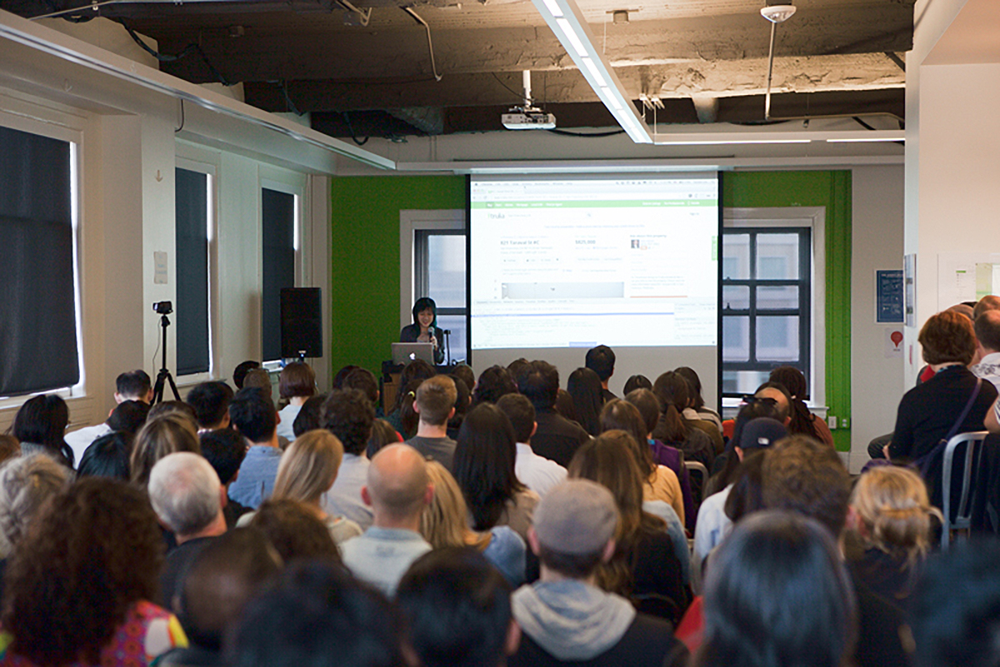

Talks
I'm interested in speaking about process, specifically about styleguides and CSS. Previously, I've presented the value of creating and maintaining a component library.
-
Experience
- IXDA San Francisco: Speaking the Code
- Thoughtbot Product Design Talks: Process is Ugly
- Carnegie Mellon: BXA alumni panel
- Academy of Arts: Guest Lecture for Visual Design Studio
Contact
If you're interested in having me speak: bysusanlin at gmail. ❄